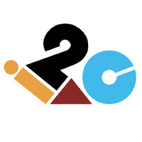

{kind=link}
'Aboat' autonomous boat project
Steering innovation with 'Aboat': An autonomous boat project harnessing ROS, Docker, and C++, focused on remote control and data processing for groundbreaking advances in maritime logistics
Welcome to my digital canvas, where technology meets creativity. I'm an Erasmus scholar with a passion for AI, data science, and software engineering, currently expanding my horizons at Abo Akademi University. My journey in technology began with a Bachelor's degree in Computer Science and has taken me through exciting roles, from being a software engineer in fintech to a project assistant in autonomous maritime logistics.
We pass through this world but once. Few tragedies can be more extensive than the stunting of life, few injustices deeper than the denial of an opportunity to strive or even to hope, by a limit imposed from without, but falsely identified as lying within. - Stephen Jay Gould
Steering innovation with 'Aboat': An autonomous boat project harnessing ROS, Docker, and C++, focused on remote control and data processing for groundbreaking advances in maritime logistics
Advance Parkinson's Disease Analysis through Cutting-Edge Deep Learning methods.
Developed start of art algorithm for detecting activities of the elderly people living alone on their own.
Expertly engineered and rigorously evaluated cutting-edge techniques for the detection of Covid-19 through X-ray and CT scan imagery. Leveraged the power of transfer learning and ensemble strategies to create a highly accurate diagnostic method.
Employed GPU programming in CUDA and C to detect dark matter in the universe, analyzing galaxy distributions to reveal significant deviations indicative of its presence.
 As a Java-focused Software Engineer, I specialize in the full lifecycle of software development, particularly in crafting and testing microservices using Spring Boot. My role involves designing efficient microservices and ensuring their seamless integration into complex systems. I'm also responsible for quality assurance and have improved our deployment processes, enhancing our continuous integration practices, leading to more efficient development cycles and higher software quality.
As an intern in a large-scale organization, I analyzed data and crafted reports for strategic insights, while collaborating with a diverse team on technology-driven marketing campaigns. This role provided a deep dive into the company's operations, enhancing my understanding of its complex system. I also expanded my technical skills by learning DevOps and Laravel, gaining valuable experience in continuous integration and web application development, all within a rich, diverse working environment.
As an intern, I played a pivotal role in managing and developing a website dedicated to analyzing inventory performance. This task involved intricate design and implementation work, particularly in creating a research-focused website using React for internal use. Collaborating with multi-background teams, I contributed both technically and creatively, ensuring the website was not only functional but also user-friendly and aligned with our research objectives. This experience sharpened my skills in web development and team collaboration, providing a comprehensive understanding of how diverse skill sets can synergize to produce impactful internal tools
I spearheaded the organization of transformational internal events by guiding cross-functional teams. My role involved not just coordination, but also strategic planning to ensure these events had a meaningful impact on participants. Additionally, I launched various programs aimed at upskilling peers, focusing on enhancing their professional and personal competencies. This initiative contributed significantly to their growth and development within the organization. In parallel, I initiated and led awareness campaigns on campus. These campaigns were designed to not only inform but also engage potential students, showcasing the unique opportunities and experiences our institution offers. My efforts in these areas demonstrate a commitment to organizational growth, peer development, and effective leadership in driving significant positive change.

Feel free to reach out with any comments or generally!
{kind=link}
{kind=link}
{kind=link}
{kind=link}